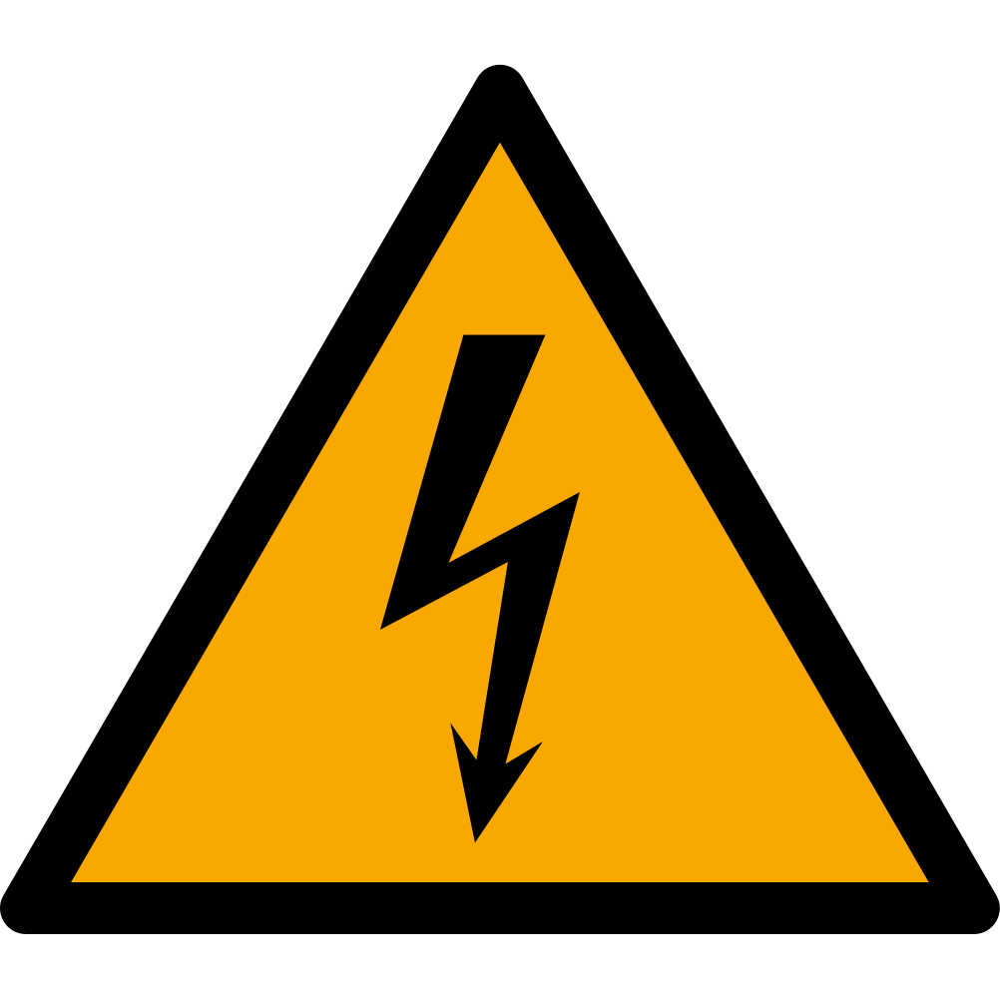

Electrical hazard
History
ISO 7010, the international safety sign standard first published in 2003, gives electricity its own warning sign, a lightning bolt in a yellow triangle. The same year, Unicode added the bolt as "High Voltage Sign", today's ⚡ emoji.
Adoption
The lightning bolt warns of electricity around the world. It marks panels, substations and power lines in a language everyone can read.
Sources
